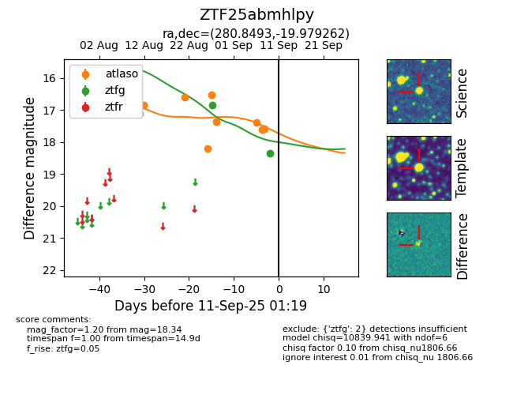

FINK: ZTF25abmhlpy
Lasair: ZTF25abmhlpy
ALeRCE: ZTF25abmhlpy
ZTF25abmhlpy (ztf,fink)
equatorial (ra, dec) = (280.8493,-19.97926)
galactic (l, b) = (14.1658,-7.26516)

last atlaso=18.28, ztfg=18.34
10 atlaso, 2 ztfg detections